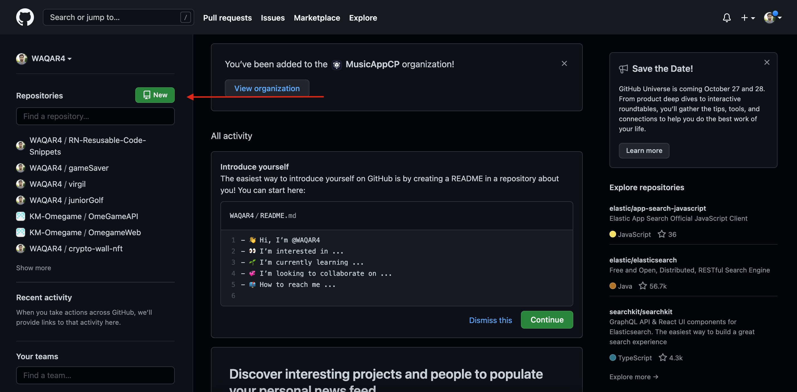
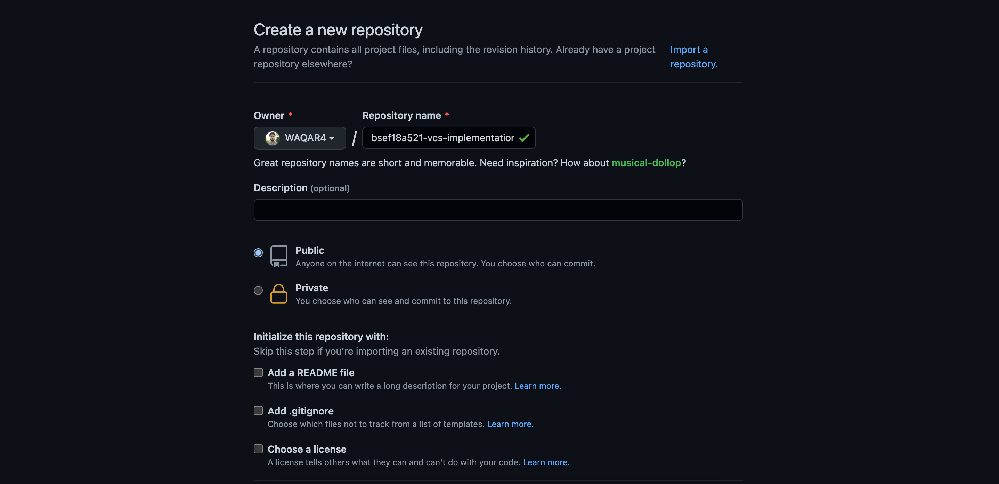
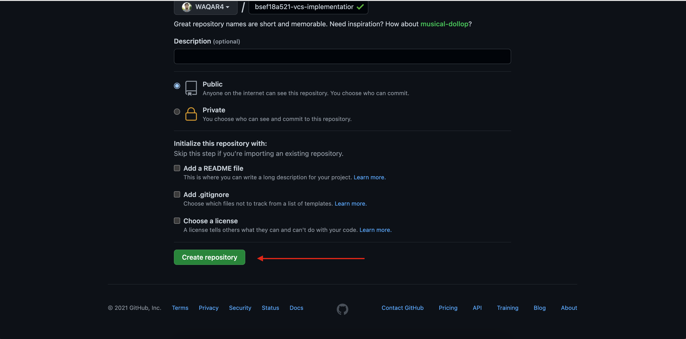
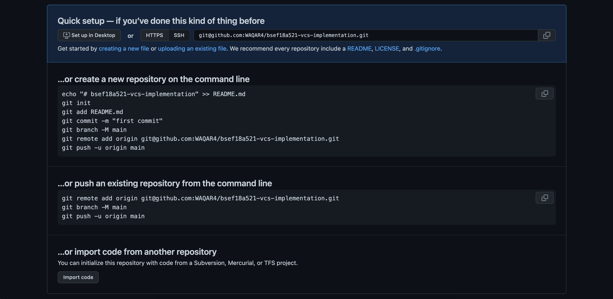
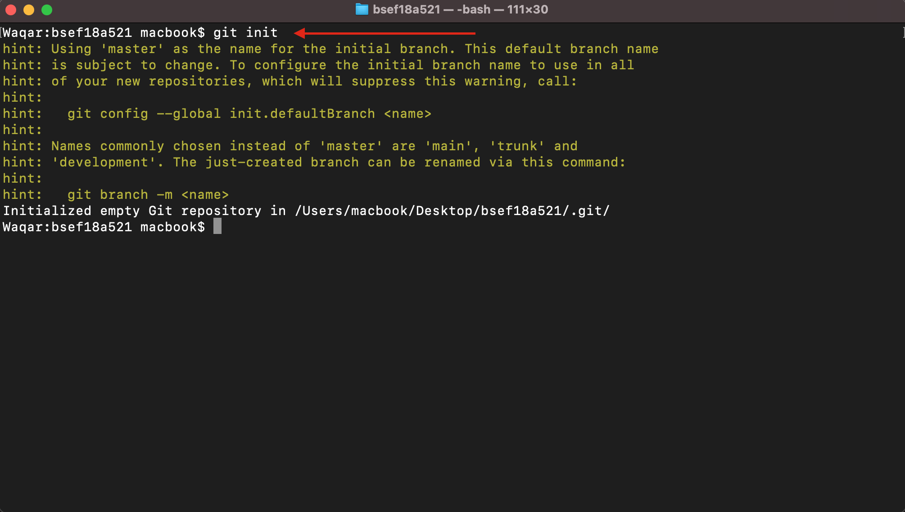
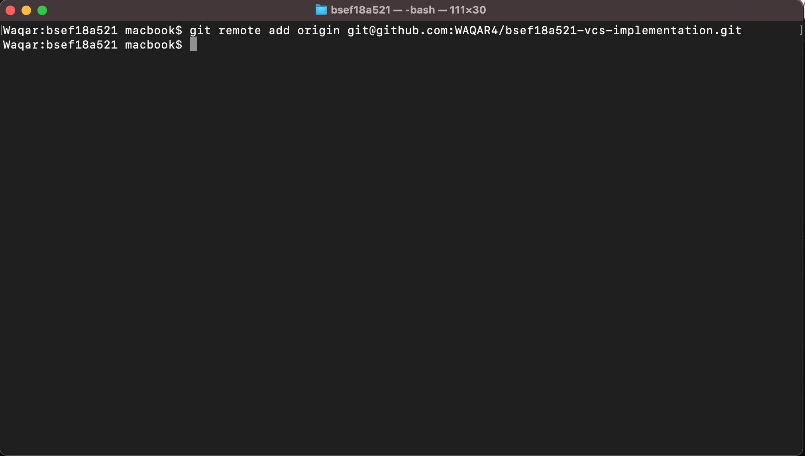

This page will explain the basics of github's version control system
1. Login to your github account and create a new repository by clicking the "New" button as indicated by the arrow in the picture
2. Fill in all the required information required to create the repository as shown below
3. After filling all thr required information, click on Create Repository button at the end of the form. This will create a new repository for you
4. Now a set of instructions will be visible to you on the screen for setting up you project for github. We will be going through all of them. The instructions page will look like as shown in the picture below
5. Open the terminal in your project folder and type command "git init" to initialize the project for github
6. Then we have to give the local project the path of the github repo where we want to store our code. The is done by typing the command "git remote add origin git@github.com:WAQAR4/bsef18a521-vcs-implementation.git" where "git@github.com:WAQAR4/bsef18a521-vcs-implementation.git" is the path of my github repo that I just created
7. Now we have to add all our files for pushing to github by typing command "git add ." where "." indicates all the files. If you want to add individual files, you can write the name of the file instead.